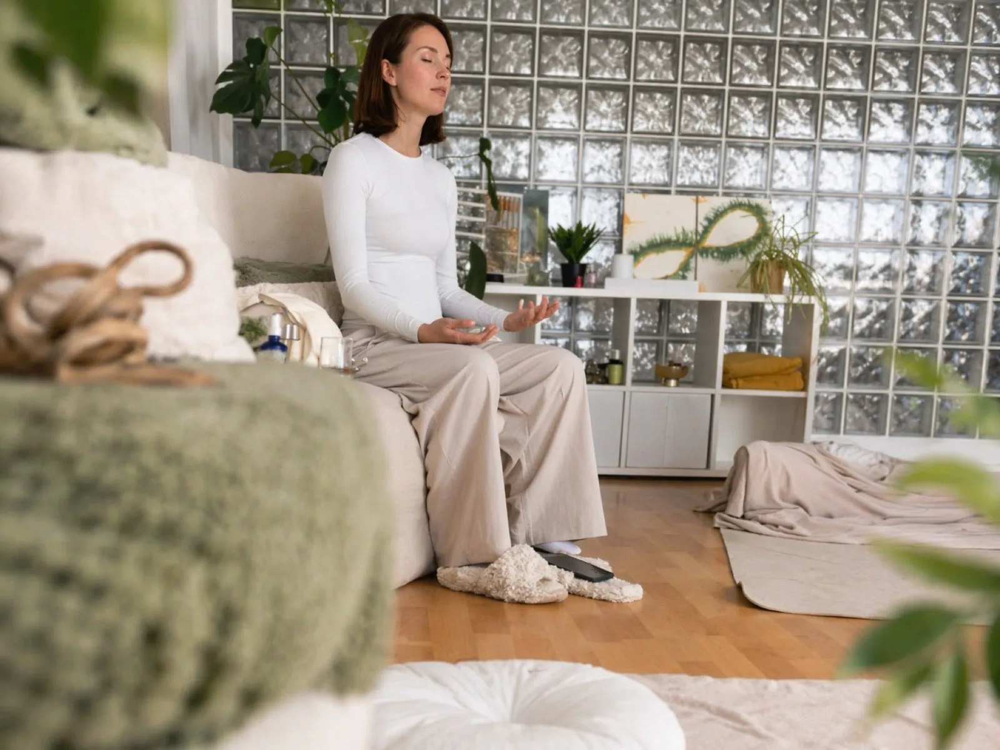
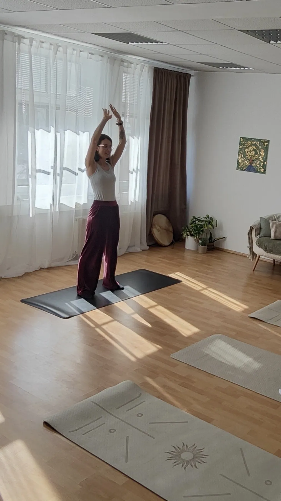
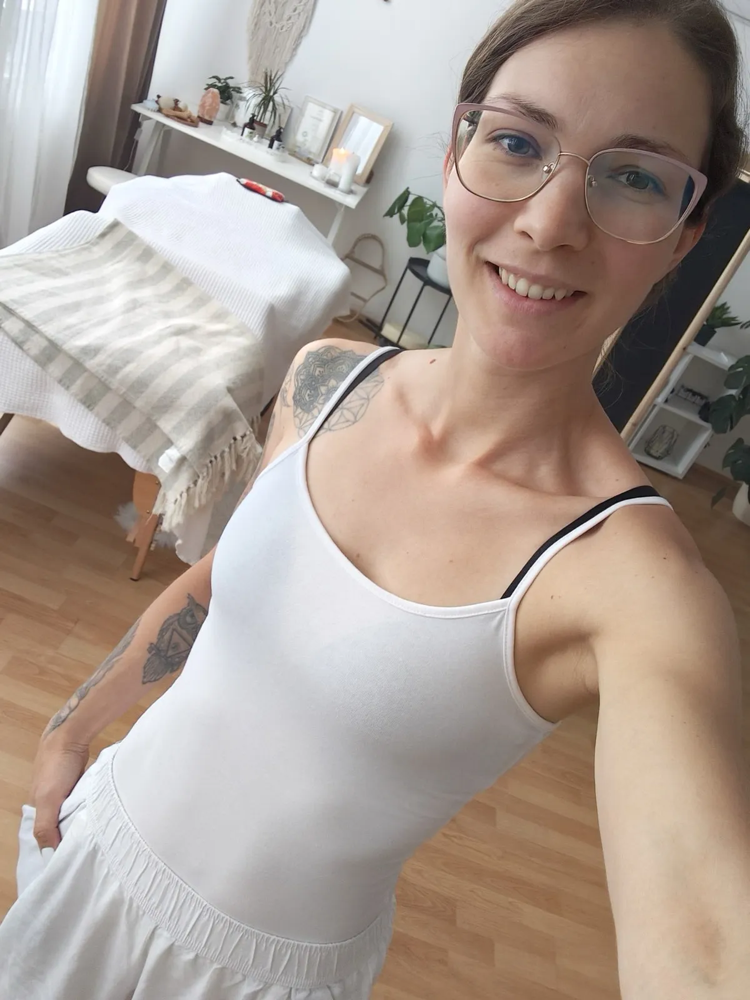

O meni
Elina
Elivital® praksa · Reiki · Kanaliziranje · Meditacije · Dogodki
O meni
Elivital® praksa · Reiki · Kanaliziranje · Meditacije · Dogodki
Hej, moje ime je Elina in sem medij za sporočila iz višjih duhovnih dimenzij obstoja.
Verjamem, da smo ljudje zavestna bitja, ki vsak zase nosi poseben DNK zapis oziroma zapis svoje duše, ki se uteleša skozi naše fizično telo.
Ampak v vsakdanjem življenju, hitrem tempu in vseh obveznostih, ki si jih naložimo, se hitro oddaljimo od sebe.
Od svojega telesa.
Od svoje duše.
Od svoje resnice.
Od svoje intuicije.
Od tega, kar v resnici čutimo in potrebujemo.
Tudi sama sem skozi različna življenjska obdobja vedno znova odkrivala, kako pomembno je, da se ustavimo in ponovno prisluhnemo sebi. Čeprav to ni vedno najlažje in moramo zato stopiti iz cone udobja.
In ravno zato je nastal SPIRITAL – prostor mojega ustvarjanja, raziskovanja in povezovanja različnih praks, skozi katere se lahko vračamo bližje sebi. Moj namen je, da ti pomagam, da lažje prehodiš to svojo pot, ki te vabi nazaj v stik s sabo in svojo dušo.
Hi, my name is Elina, and I am a medium for messages from the higher spiritual dimensions of existence.
I believe that we humans are conscious beings, each carrying a unique DNA imprint — the imprint of our soul — which is embodied through our physical body.
But in everyday life, with its fast pace and all the obligations we take on, we quickly drift away from ourselves.
From our body.
From our soul.
From our truth.
From our intuition.
From what we truly feel and need.
Through different stages of my own life, I have discovered again and again how important it is to pause and listen to ourselves once more — even though it isn't always easy and asks us to step out of our comfort zone.
That is exactly why SPIRITAL was born — a space for my creating, exploring and weaving together different practices through which we can return closer to ourselves. My intention is to help you walk your own path more easily — the path that invites you back into connection with yourself and your soul.
Moje delo temelji na povezovanju telesa, energije in notranjega (čustvenega in mentalnega) sveta.
Skozi leta sem raziskovala različne načine dela s telesom, dihom, energijo, meditacijo in notranjim doživljanjem.
Študij veterine in kineziologije me je tako spoznal s fizičnim telesom ljudi in živali, kako delujemo kot fizična bitja, ampak sem od nekdaj verjela, da bolezni niso samo posledica fizičnega, temveč da se za njimi lahko skriva še nekaj več.
Raziskovala sem različne prakse joge, meditacij in dela z energijskim telesom. Na svoji poti sem pridobila veliko različnih certifikatov in diplom, ampak mi niso nič koristile, dokler vsega osvojenega znanja nisem dala v prakso.
Poporodna depresija pa me je soočila še globlje s psihoterapijo in raziskovanjem svoje podzavesti. In to je bil eden izmed mojih največjih portalov rasti v mojem življenju in tudi razlog, da sem vedno bolj čutila vzgib pomagati ženskam, še posebej mamicam.
My work is based on connecting the body, energy and the inner (emotional and mental) world.
Over the years I have explored many ways of working with the body, breath, energy, meditation and inner experience.
Studying veterinary medicine and kinesiology taught me about the physical bodies of people and animals and how we function as physical beings — yet I have always believed that illness is not only physical, and that something more may lie behind it.
I explored various practices of yoga, meditation and working with the energy body. Along the way I earned many certificates and diplomas, but they meant nothing until I put all that knowledge into practice.
Postpartum depression then led me even deeper into psychotherapy and exploring my subconscious. It became one of the greatest portals of growth in my life — and the reason I felt an ever stronger calling to help women, especially mothers.

Danes vso svoje znanje in izkušnje povezujem v prakse, ki jih ustvarjam za ženske, ki si želijo:
Pri meni ti ni treba ničesar dokazovati, ampak lahko odložiš vse maske in vloge, ki si si jih nadela (ali so ti jih drugi nadeli) v tvojem življenju.
Lahko prideš točno takšna, kot si.
Today I weave all my knowledge and experience into practices I create for women who want:
With me, you don't have to prove anything — you can set down all the masks and roles you have taken on (or that others have placed on you) in your life.
You can come exactly as you are.
Ne verjamem, da obstaja ena prava pot za vse.
Zato pri svojem delu uporabljam različne tehnike in znanja zelo intuitivno, kar v danem trenutku začutim, da ti lahko pomaga.
Včasih skozi telo.
Včasih skozi tišino.
Včasih skozi energijo.
Včasih skozi pogovor ali notranji vpogled.
Ti pa izberi tisto, kar v tem trenutku najbolj čutiš, da potrebuješ.
I don't believe there is one right path for everyone.
That's why in my work I use different techniques and knowledge very intuitively — whatever I sense in the moment can help you.
Sometimes through the body.
Sometimes through silence.
Sometimes through energy.
Sometimes through conversation or inner insight.
And you choose what you feel you need most right now.




Rezerviraj svoj termin ali si oglej vse storitve.